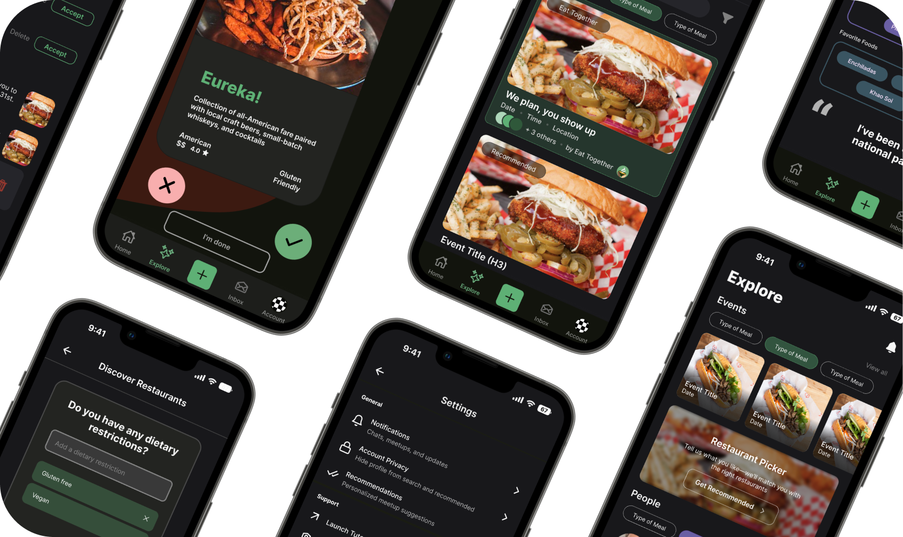
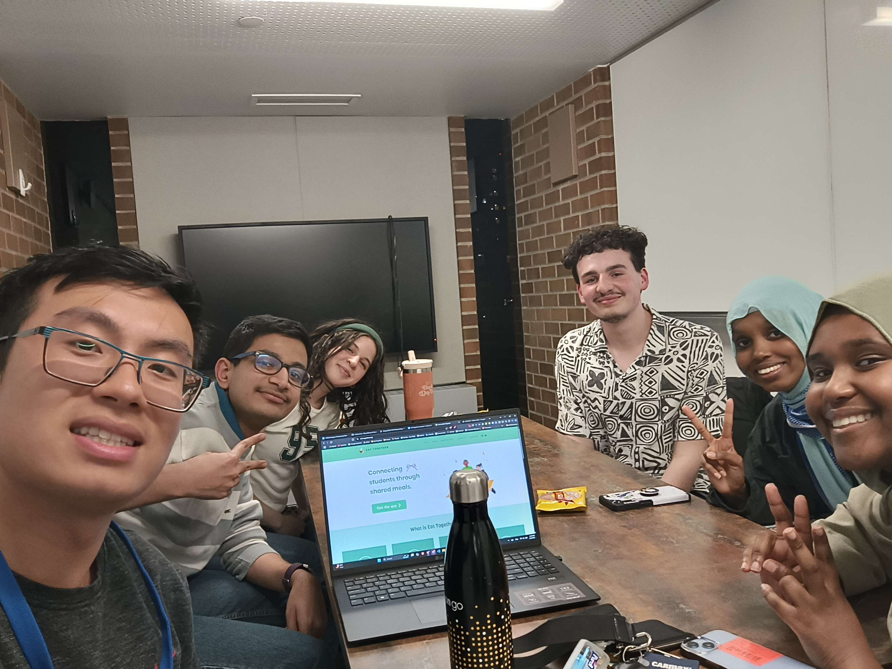

Mobile Design · Startup Work
Eat Together.
Making student profiles easier to understand, personalize, and trust before turning a shared meal into a real connection.

01 · Challenge
A profile could not build trust if students were unsure where to act or what information mattered.
Turning shared meals into something more.
Eat Together is a student-led startup that brings University of Washington students together for small-group meals. The product turns everyday dining into an opportunity for conversation, perspective sharing, and genuine social connection.
As the platform grew to more than 600 students, the team expanded into restaurant discovery, dining-dollar exchange, friend recommendations, and memories from past gatherings. The profile became the connective tissue: it had to help someone understand the person across from them without reducing them to a list of labels.
Make identity easier to understand—and safer to share.
I owned the research, design, and five-participant usability study for Edit Tags, Settings, and Edit Profile, then translated the findings into accessible tag and navigation components.
- 3
- screens redesigned
- 5
- research interviews
- 5
- usability participants

Core team meeting with Eric Xiao, Navneeth Dhamotharan, Ruweyda Abdi, Mumtaz Sheikhaden, Sebastian Hriscu, and me to align on the startup vision and redesign direction.
02 · Research and framing
The strongest questions exposed mental models, customization needs, and behavior in context.
Five semi-structured interviews combined open-ended prompts with task walkthroughs. Affinity mapping separated surface preferences from the structural issues that repeatedly slowed profile use.
5 semi-structured interviews
Open-ended questions, task walkthroughs, affinity mapping, and a focused competitive review.
Find the source of hesitation
I needed to separate visual preference from breakdowns in navigation, self-expression, and trust.
Clarity mattered more than density
- Icon-only controls slowed orientation.
- Tags were valuable but hard to edit.
- Required fields weakened disclosure comfort.
Selected from the interview guide
Three questions that best demonstrate the research strategy
“Please take a few moments to get familiar with the profile page. In your own words, what would you expect to be able to do with it?”
“Describe your experience customizing your profile. Which features feel intuitive, and which feel unnecessary or should be reconsidered?”
“Imagine you wanted to adjust the tags on your profile to personalize it. How would you go about completing this task?”
Synthesis
Three findings became three interface decisions.
Finding · Orientation
Students could see controls but could not predict where they led.
Design response Grouped settings, descriptive labels, and explicit destination cues.
Finding · Expression
Tags informed compatibility, but the editor hid choices inside text fields.
Design response Visible categories, selectable states, and a path to request new options.
Finding · Trust
Required markers made personal disclosure feel compulsory.
Design response Persistent labels, intentional requirements, and identity-first sections.
Competitive analysis
Three products clarified the opportunity.
Instagram makes identity scannable. Meetup connects interests to events. StoryUp adds narrative depth.
Opportunity space
Combine identity, compatibility, and a clear next step to meet.

Uses a photo, short bio, highlights, and a visual grid to make identity fast to recognize.
Gap: rich self-expression does not consistently translate shared interests into a concrete plan to meet.
Meetup
Connects interests, groups, privacy choices, and event participation around an offline activity.
Gap: identity can be split across site and group profiles, making the person secondary to the event structure.
SU
StoryUp
Uses story-led self-expression to communicate personality with more context than a compact profile field.
Gap: narrative adds depth, but practical compatibility signals can take longer to compare at a glance.
| Platform | Scannable identity | Structured interests | Meeting context | Privacy control | Clear next action |
|---|---|---|---|---|---|
| ✓ | ~ | × | ✓ | ~ | |
| Meetup | ~ | ✓ | ✓ | ✓ | ✓ |
| StoryUp | ~ | × | ~ | ~ | ~ |
| Eat Together | ✓ | ✓ | ✓ | ✓ | ✓ |
✓ Strong
~ Partial
× Missing
03 · Design direction
The profile needed to communicate meaning before asking students to complete it.
The research became three practical rules that could guide layout, component behavior, and accessibility decisions across every redesigned screen.
01
Prioritize high-signal identity
Make interests, goals, location, and the context for meeting easier to scan than lower-value profile details.
Responds to misplaced emphasis
02
Name actions and outcomes
Use persistent labels, descriptions, groups, and directional cues so icons never carry the full burden of meaning.
Responds to navigation friction
03
Show state without color alone
Pair color with borders, fill, labels, and motion-safe feedback while maintaining readable contrast.
Responds to accessibility gaps
04 · Profile redesign
Three redesigned screens turn research findings into visible interface decisions.
Hover on desktop or tap on touch devices to compare each final screen with the previous design. Every card preserves the same image-and-explanation structure on both sides.
Cross-functional collaborationResearch asked for custom tags. Trust and safety required a guardrail. Read the tradeoff
Students wanted fuller self-expression.
Interview participants asked for more freedom to describe interests that were missing from the existing tag set.
Free text introduced product risk.
Developers explained that a controlled word bank prevents inappropriate language and sensitive personal information. Tags also feed the recommendation algorithm, so consistent vocabulary protects matching quality.
Expand the word bank with active users.
Instead of making tags fully customizable, I proposed an ongoing survey to capture missing language, review it safely, and add high-demand options to the governed taxonomy.
05 · Screen behavior
Each screen can be inspected feature by feature, with every decision traced back to research.
Choose a screen, then select a ring or its matching description. The expanded card explains how the interface responds to a specific research signal.
Select a ring to inspect how Edit Tags supports identity and compatibility.
01
Meaningful category groups
Hobbies, About Me, goals, and food preferences mirror the information students said they use to understand compatibility. The structure supports recognition instead of recall.
02
Visible selection states
Individual pills expose what is selected and what remains available, answering the research finding that hidden text-field values were difficult to review.
03
Governed custom requests
A Custom entry point lets students flag missing language for the word-bank survey, balancing the research need for self-expression with safety and recommendation-quality guardrails.
04
One clear completion action
A single Update Tags button closes the flow with a clear result, reducing the competing emphasis and persistent navigation found in the previous screen.
Select a ring to inspect how Settings creates orientation before action.
01
Intent-based groups
General, Support, and Account Settings become visual landmarks, directly reducing the “extra steps” feeling caused by a flat, undifferentiated list.
02
Descriptive destinations
Labels such as “Visibility, messages, profile” explain the outcome before a tap, so icons support comprehension instead of carrying it alone.
03
Consistent navigation cues
Right chevrons establish that each row opens a destination. This replaces parenthetical ON and OFF states that made row behavior ambiguous.
04
Separated destructive action
Delete account is placed below routine controls with distinct red text, helping students recognize risk without visually overpowering the rest of the screen.
Select a ring to inspect how Edit Profile separates account facts from self-expression.
01
Explicit photo action
Edit Photo names the action directly and separates it from the image itself, responding to research showing that symbol-only edit controls created uncertainty.
02
Persistent field labels
Students can scan Name, Birth Year, Pronouns, and Location without decoding icons or relying on entered values to understand each field.
03
Intentional required status
Asterisks appear only where the product genuinely needs information. Optional fields remain available without creating pressure to disclose.
04
Information before biography
Section labels and dividers create a stable reading order: essential profile facts first, then flexible self-expression through biography and fun facts.
06 · A/B usability testing
Simple tasks tested whether the redesign reduced hesitation, not whether participants preferred its appearance.
Five participants completed the same three tasks in the previous experience (A) and redesigned prototype (B). I observed discoverability, comprehension, and confidence after each action.
5participants
3equivalent tasks
2design variants
3success signals
Icon-led fields, a flat Settings list, text-entry tags, and persistent bottom navigation.
Labeled fields, grouped Settings, visible tag states, and focused completion actions.
Orientation
Tests discoverabilityFind account controls
“Starting on your profile, navigate to Settings and show where you would manage profile visibility.”
Expression
Tests state confidencePersonalize tags
“Add Cooking to Hobbies, choose another interest, and update your profile.”
Disclosure
Tests comprehensionEdit profile details
“Change your photo and location, then explain which fields are required and which are optional.”
Results from 5 sessions
The new structure tested clearly. Tag accessibility needed another pass.
Cleaner scanningLabels and groups helped participants understand each screen faster.
Predictable SettingsDescriptions and chevrons clarified where each row led.
Accessibility issueTag state still relied too heavily on low-contrast color differences.
07 · Accessibility iteration
The next iteration made status readable through contrast, shape, and feedback together.
The usability findings narrowed the accessibility work to the components students repeatedly touched: tags and the bottom navigation. That focus kept the iteration tied to the profile journey and the moments where state needed to be unmistakable.
WCAG-informed component pass
Keep the personality; remove color-only meaning.
The tag colors from the prototype were rebuilt as live HTML components below. Darker text, lighter fills, explicit state styling, visible focus, and reduced-motion support make the same visual language more resilient.
BeforeMixed contrast
Student Title
Student Title
Student Title
Purple 2.36:1
Blue 12.37:1
Yellow 2.79:1
AfterReadable palette
Student Title
Student Title
Student Title
Purple 7.60:1
Blue 12.33:1
Yellow 7.48:1
08 · Reflection and next steps
The redesign became stronger when each screen was treated as part of one connected profile experience.
Across research, synthesis, prototyping, and testing, the work moved from isolated usability fixes toward a more coherent system. The most important decisions connected what students needed to understand, what they wanted to express, and how the interface could make both feel effortless across Edit Tags, Settings, Edit Profile, and navigation.
Synthesis created the throughline
Mapping repeated themes across interviews helped turn scattered feedback into shared principles for hierarchy, customization, and clearer interaction cues.
Consistency reduced relearning
Reusable labels, cards, tags, and navigation states made the experience easier to scan while giving engineering a clearer foundation for implementation.
Validate the complete journey
The next study should follow students from editing a profile through discovering a match and organizing a meal, measuring whether the redesigned system improves confidence across the full flow.